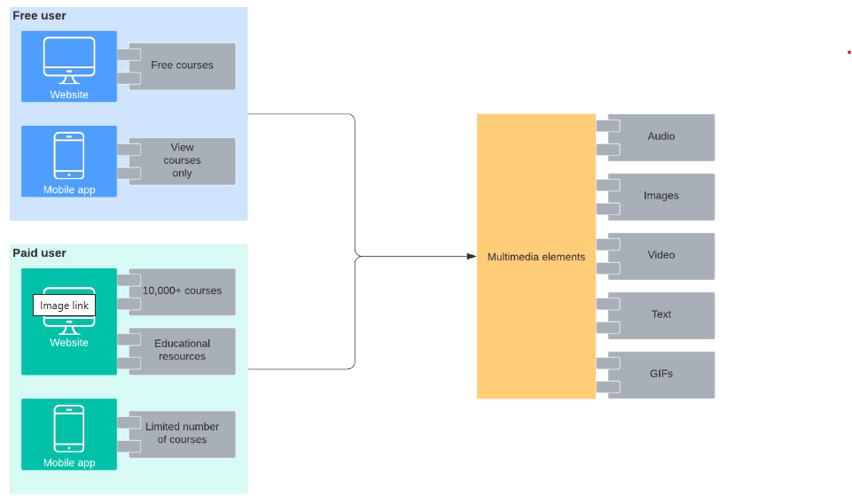

Architectural Overview
High-level description of the system architecture, including its major components and their interactions.
System Components
The system consists of the following main components:
- User Interface: Allows users to interact with the system.
- Application Logic: Contains the core functionality and business rules.
- Database: Stores all persistent data for the system.
- External Services: Interfaces with external systems and services.
- API Gateway: Manages API calls between the user interface and the backend services.
Component Interactions
The interactions between these components are illustrated in the following diagram:

The diagram illustrates how the User Interface communicates with the Application Logic through the API Gateway, and how the Application Logic interacts with the Database and External Services.
System Layers
The system architecture is divided into several layers, each responsible for different aspects of the system:
- Presentation Layer: Handles the user interface and user experience.
- Business Logic Layer: Contains the core functionality and business rules.
- Data Access Layer: Manages interactions with the database.
- Integration Layer: Manages communication with external services.